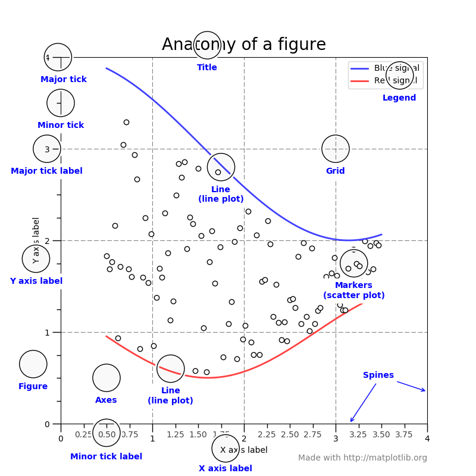
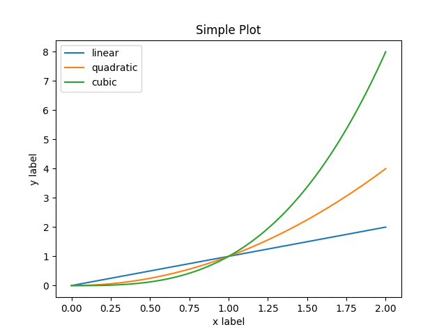
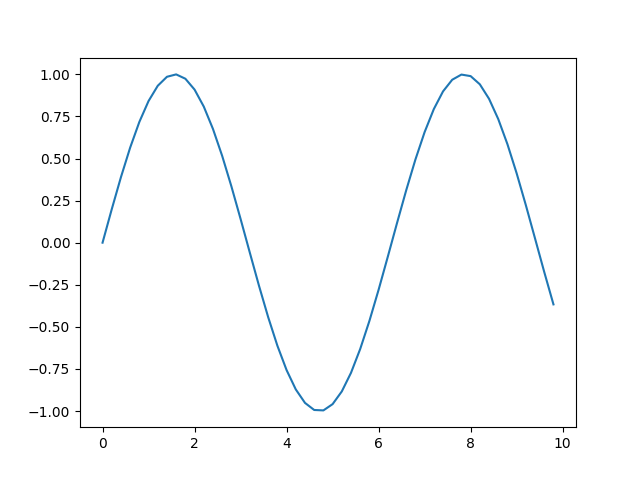
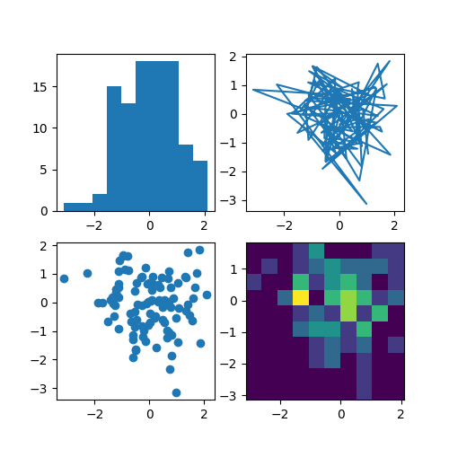
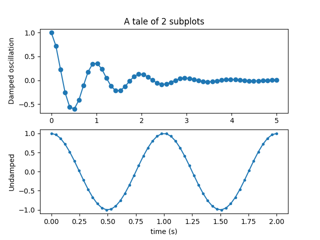
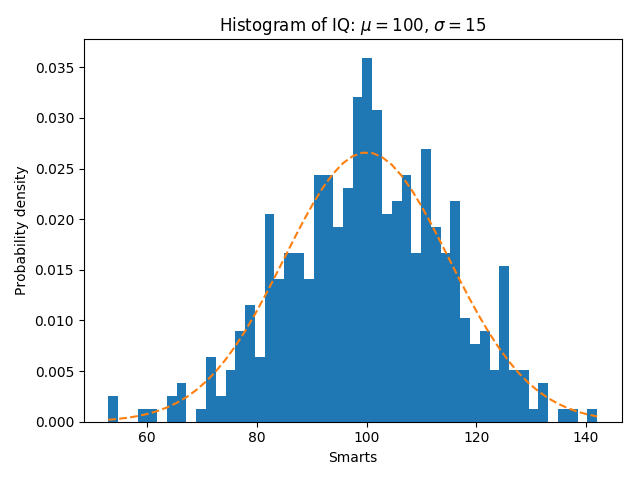
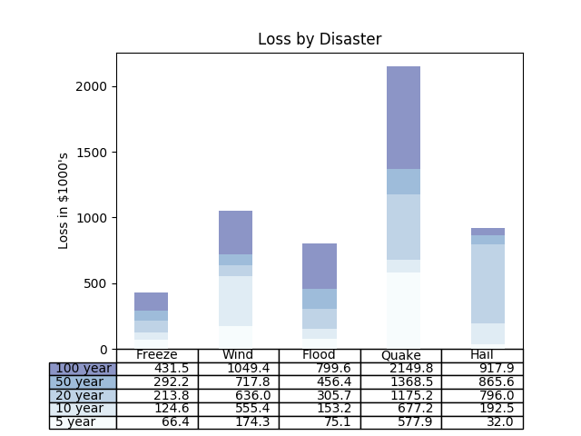
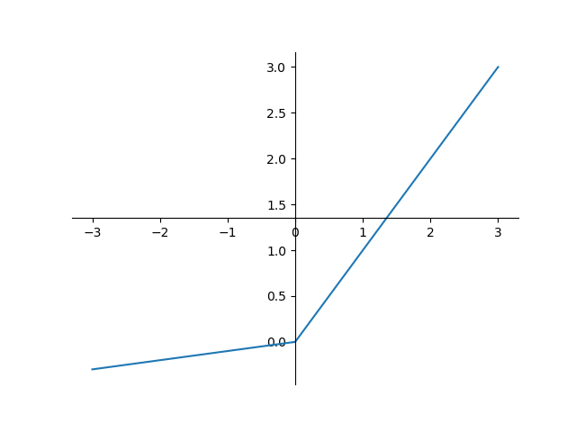

matplotlib: 绘图包
Table of Contents
1 matplotlib
matplotlib 提供了绘制图表的基础功能，可以绘画多种科学计算的展示图片，和 MATLAB 绘制出来的图片体验很像。
1.1 基本术语
matplotlib 的基本术语可以参考官网中展示的图。

1.2 绘制图形
基本画图如下，所有 matplotlib 数据都是使用 numpy 库中的 numpy.array
import matplotlib.pyplot as plt import numpy as np filename = "../resource/image/2018/10/matplotlib1.png" x = np.linspace(0, 2, 100) plt.plot(x, x, label='linear') plt.plot(x, x**2, label='quadratic') plt.plot(x, x**3, label='cubic') plt.xlabel('x label') plt.ylabel('y label') plt.title("Simple Plot") plt.legend() plt.savefig(filename) return filename

绘制正弦曲线，这里使用 subplots 函数获取子图。
import matplotlib.pyplot as plt import numpy as np filename = "../resource/image/2018/10/matplotlib2.png" x = np.arange(0, 10, 0.2) y = np.sin(x) fig, ax = plt.subplots() ax.plot(x, y) plt.savefig(filename) return filename

多图并列排版也可以使用 subplots 来实现
import numpy as np import matplotlib.pyplot as plt filename = '../resource/image/2018/10/matplotlib3.png' np.random.seed(19680801) data = np.random.randn(2, 100) fig, axs = plt.subplots(2, 2, figsize=(5, 5)) axs[0, 0].hist(data[0]) axs[1, 0].scatter(data[0], data[1]) axs[0, 1].plot(data[0], data[1]) axs[1, 1].hist2d(data[0], data[1]) plt.savefig(filename) return filename

import numpy as np import matplotlib.pyplot as plt filename = '../resource/image/2018/10/matplotlib4.png' x1 = np.linspace(0.0, 5.0) x2 = np.linspace(0.0, 2.0) y1 = np.cos(2 * np.pi * x1) * np.exp(-x1) y2 = np.cos(2 * np.pi * x2) plt.subplot(2, 1, 1) plt.plot(x1, y1, 'o-') plt.title('A tale of 2 subplots') plt.ylabel('Damped oscillation') plt.subplot(2, 1, 2) plt.plot(x2, y2, '.-') plt.xlabel('time (s)') plt.ylabel('Undamped') plt.savefig(filename) return filename

import numpy as np import matplotlib.pyplot as plt filename = '../resource/image/2018/10/matplotlib5.png' np.random.seed(19680801) # example data mu = 100 # mean of distribution sigma = 15 # standard deviation of distribution x = mu + sigma * np.random.randn(437) num_bins = 50 fig, ax = plt.subplots() # the histogram of the data n, bins, patches = ax.hist(x, num_bins, density=1) # add a 'best fit' line y = ((1 / (np.sqrt(2 * np.pi) * sigma)) * np.exp(-0.5 * (1 / sigma * (bins - mu))**2)) ax.plot(bins, y, '--') ax.set_xlabel('Smarts') ax.set_ylabel('Probability density') ax.set_title(r'Histogram of IQ: $\mu=100$, $\sigma=15$') # Tweak spacing to prevent clipping of ylabel fig.tight_layout() plt.savefig(filename) return filename

绘制二维表格
import numpy as np import matplotlib.pyplot as plt filename = '../resource/image/2018/10/matplotlib6.png' data = [[ 66386, 174296, 75131, 577908, 32015], [ 58230, 381139, 78045, 99308, 160454], [ 89135, 80552, 152558, 497981, 603535], [ 78415, 81858, 150656, 193263, 69638], [139361, 331509, 343164, 781380, 52269]] columns = ('Freeze', 'Wind', 'Flood', 'Quake', 'Hail') rows = ['%d year' % x for x in (100, 50, 20, 10, 5)] values = np.arange(0, 2500, 500) value_increment = 1000 # Get some pastel shades for the colors colors = plt.cm.BuPu(np.linspace(0, 0.5, len(rows))) n_rows = len(data) index = np.arange(len(columns)) + 0.3 bar_width = 0.4 # Initialize the vertical-offset for the stacked bar chart. y_offset = np.zeros(len(columns)) # Plot bars and create text labels for the table cell_text = [] for row in range(n_rows): plt.bar(index, data[row], bar_width, bottom=y_offset, color=colors[row]) y_offset = y_offset + data[row] cell_text.append(['%1.1f' % (x / 1000.0) for x in y_offset]) # Reverse colors and text labels to display the last value at the top. colors = colors[::-1] cell_text.reverse() # Add a table at the bottom of the axes the_table = plt.table(cellText=cell_text, rowLabels=rows, rowColours=colors, colLabels=columns, loc='bottom') # Adjust layout to make room for the table: plt.subplots_adjust(left=0.2, bottom=0.2) plt.ylabel("Loss in ${0}'s".format(value_increment)) plt.yticks(values * value_increment, ['%d' % val for val in values]) plt.xticks([]) plt.title('Loss by Disaster') plt.savefig(filename) return filename

1.3 绘制数学函数图像
import numpy as np import matplotlib.pyplot as plt import math filename = '../resource/image/2019/02/image081008.png' def math_plot(x, y, filename): fig = plt.figure() ax = fig.add_subplot(1, 1, 1) # Move left y-axis and bottim x-axis to centre, passing through (0,0) ax.spines['left'].set_position('center') ax.spines['bottom'].set_position('center') # Eliminate upper and right axes ax.spines['right'].set_color('none') ax.spines['top'].set_color('none') # Show ticks in the left and lower axes only ax.xaxis.set_ticks_position('bottom') ax.yaxis.set_ticks_position('left') plt.plot(x, y) plt.savefig(filename) x = np.linspace(-3, 3, 500) y = [t if t > 0 else 0.1 * t for t in x] math_plot(x, y, filename) return filename
